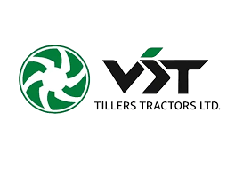
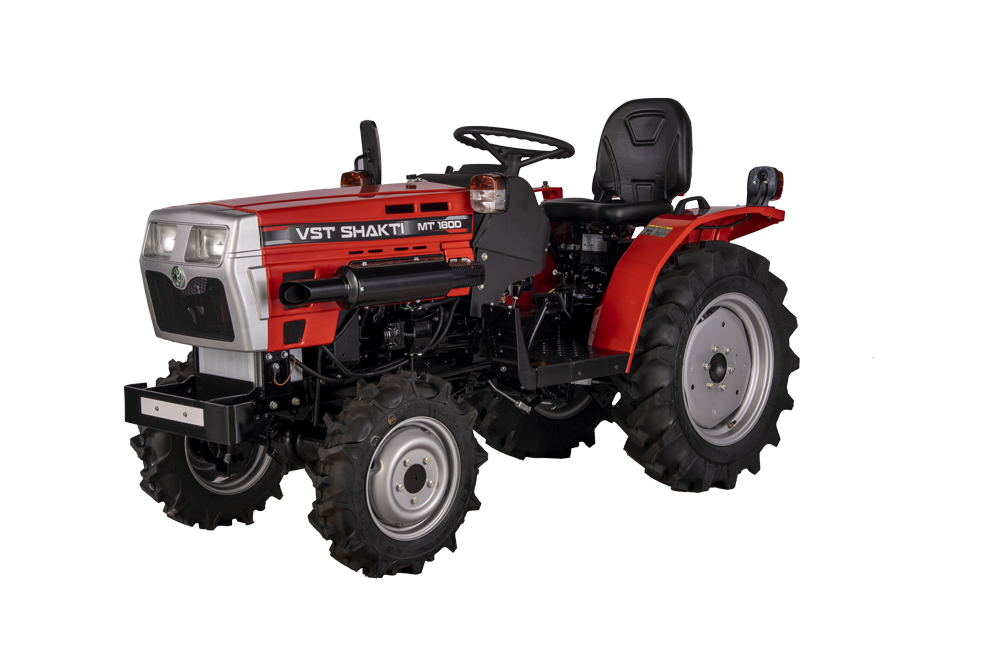
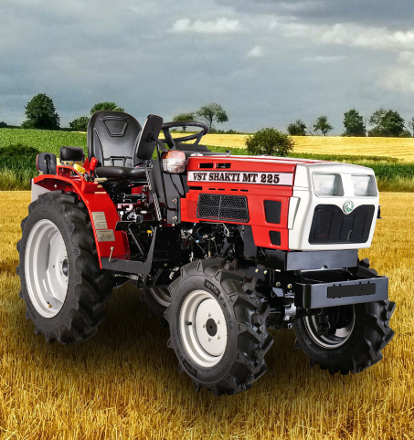
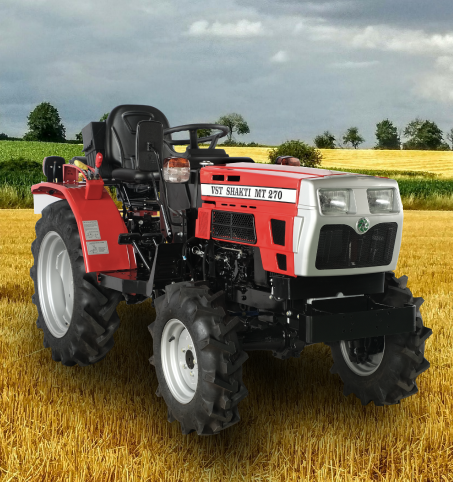
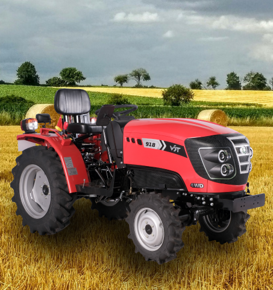
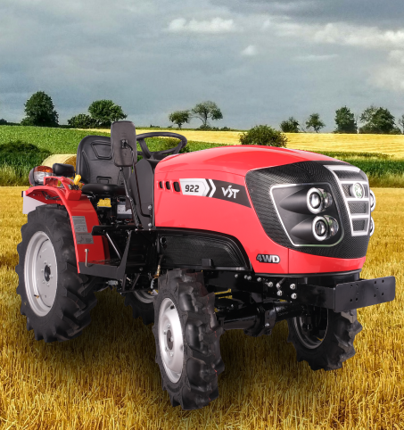
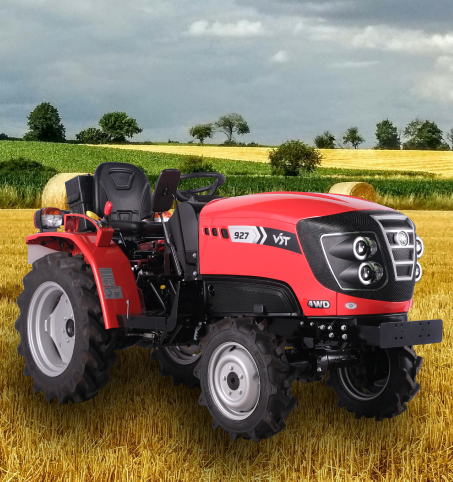
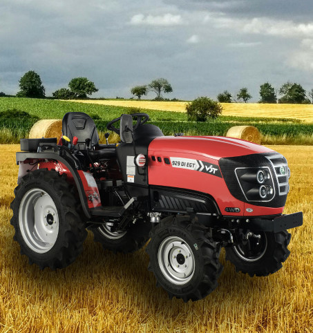

VST Tractor Models
Suryadev Agro – Authorized Dealer

Suryadev Agro – Authorized Dealer


HP: 18.5
3 सिलेंडर डीज़ल इंजन
900.51 CC इंजन क्षमता
6 Forward + 2 Reverse गियर
✔ Mini Tractor | Wet & Dry Land Compatible

HP: 22
3 सिलेंडर डीज़ल इंजन
4WD मिनी ट्रैक्टर
6 Forward + 2 Reverse गियर
✔ Compact Design | Orchard & Garden Specialist

HP: 27
4 सिलेंडर डीज़ल इंजन
4WD ट्रैक्टर
8 Forward + 2 Reverse गियर
✔ Powerful Mini Tractor | Orchard & Field Ready

HP: 18
4 व्हील ड्राइव (4WD)
979.5 CC इंजन
6 Forward + 2 Reverse गियर
✔ Compact Orchard Tractor | Multi Crop Specialist

HP: 22 (16.40 kW)
3 सिलेंडर डीज़ल इंजन
4 व्हील ड्राइव (4WD)
6 Forward + 2 Reverse गियर
✔ Powerful Orchard Tractor | Multi Crop Specialist

HP: 24 (17.89 kW)
4 सिलेंडर डीज़ल इंजन
4 व्हील ड्राइव (4WD)
6 Forward + 2 Reverse गियर
✔ 9 Crop Expert | Powerful Orchard Tractor

HP: 29 (21.62 kW)
3 सिलेंडर डीज़ल इंजन
4 व्हील ड्राइव (4WD)
8 Forward + 2 Reverse गियर
✔ High Power Compact Tractor | Heavy Duty Performance

HP: 30
3 सिलेंडर डीज़ल इंजन
4 व्हील ड्राइव (4WD)
9 Forward + 3 Reverse गियर
✔ Premium Compact Tractor | Heavy Duty Performance

HP: 36 (26.84 kW)
3 सिलेंडर डीज़ल इंजन
4 व्हील ड्राइव (4WD)
9 Forward + 3 Reverse गियर
✔ High Power Orchard Specialist | Multi-Crop Performance